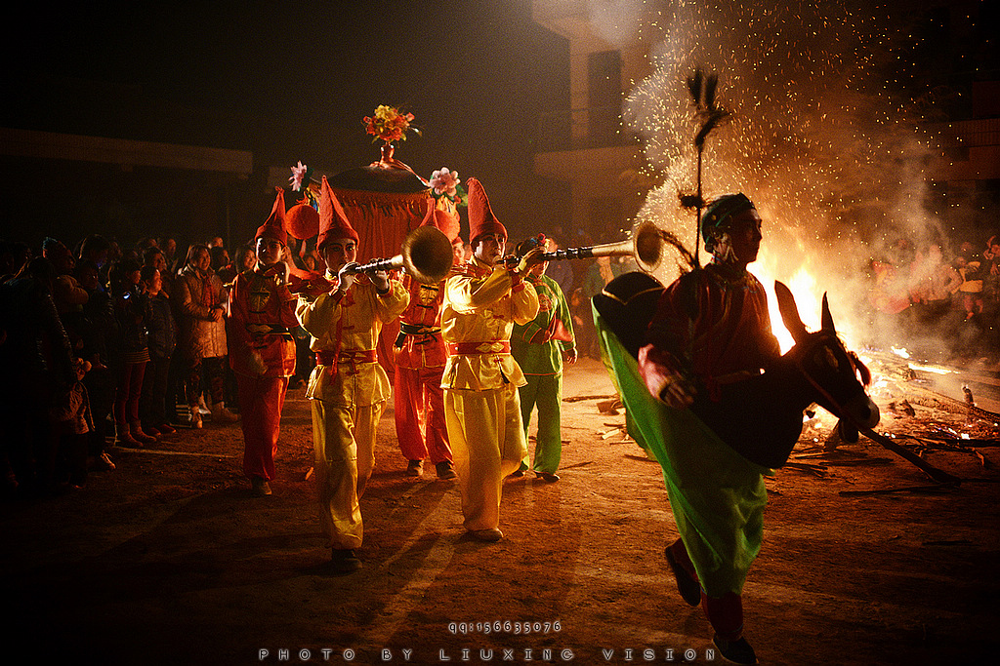

想象一下，当你千里迢迢赶赴一个古朴村落，只为目睹一场神秘的血社火表演。然而，当表演开始，你却发现它被安排在了一个现代化的旅游广场上，背景是嘈杂的音响，表演时间大大缩短，妆容似乎也不是那么精细......
这一刻，你会不会感到一丝失落？会不会认为自己看到的已经不再是真正的“血社火”了呢？
而我们今天要讨论的核心问题：在旅游大潮的冲击下，像血社火这样古老而独特的民俗，该如何守住自己的“魂”？
在文化人类学中，有一个概念叫做“旅游凝视”。简单来说，就是游客带着特定的期待，比如看猎奇、看热闹、拍照打卡等，去“看”一种文化时，这种“看”会转化成一种“凝视”，在不知不觉中塑造着被看的文化。
为了满足游客的这种“凝视”，血社火可能正在发生一些微妙的变化。
第一，其可能从一种神圣的仪式转变为一种夸张的表演。血社火原本时依附于特定的的年节、庙会的庄严仪式，却逐渐变成一项天天上演、准时开点的旅游节目，神圣性和乡村凝聚力可能让位于娱乐性和观赏性。
第二，其“恐怖性”可能被削弱。血社火的妆容是及其逼真甚至血腥的，它希望以一种极致的视觉冲击，去震撼观看者的心理，从而达到驱邪纳福、惩恶扬善的目的。但为了照顾游客，尤其是儿童的心理，或为了避免血腥暴力的争议，妆容可能变得温和，使得其失去了那份原始的粗犷力量。
第三，为了适应旅游的发展，血社火表演不得不去赶场次，其复杂的化妆流程可能会被简化。同时，从前神秘不外传的化妆技艺也可能被开发成项目来吸引游客。
在谈到血社火的本真性时，我们究竟在探讨什么？是必须复刻几百年前的标准模板，还是意味着它只能藏于深山、秘不示人？这些僵化的理解，反而会窒息血社火的生命力。
本真性的本质是活态传承，是是一条流动的河，而非一块凝固的冰。所以，真正关键的问题不是“它变了吗”，而是“它该往何处去”。
血社火的变化，是要抛弃灵魂去迎合市场，还是应该在拥抱时代的同时，更加坚定那颗驱邪纳吉、凝聚社区的初心？
在对当下旅游形势和血社火的本真性分析之后，我们应该清楚，要推动血社会的传承与创新，必须要坚持保护和发展并重。
首先，解决问题的核心在于区分表演场景，实现“各得其所”。必须严格保留一年一度最核心的祭祀性表演，使其作为不对外售票的“神圣场”，以维护其对于本地社区的神圣性与完整性。
同时，可以为旅游者设计专门的、高质量的文化展演版本，此版本虽可在时长和形式上适当调整，但必须严格尊重核心技艺与文化内核，并配以深度的文化解说。
其次，关键在于转化游客角色，引导深度参与。可以通过APP、解说牌、专业导览等多元方式，将血社火的历史渊源、妆容的象征意义（如“七煞”代表什么）等进行生动解读，从而将游客从猎奇的“看客”，转变为能够理解其文化内涵的“参与者”。
最后，这一切的根基在于赋能社区，确保传承动力。必须建立合理的利益反馈机制，让旅游发展的收益真正反哺传承人与本地社区。当传承者能凭借这门技艺获得尊严与体面的生活时，他们内心守护文化“本真”的动力才会被最大化激活——这种内在的坚守，远比任何外部的强制保护都更加坚实有效。

血社火正站在一个十字路口。旅游的“凝视”既是一种挑战，也是一次让古老文化被世界看见的机遇。我们追求的，不应是把它锁进玻璃柜里成为标本，而是帮助它找到一个既能昂首走向市场，又不曾忘记为何出发的活态传承之路。